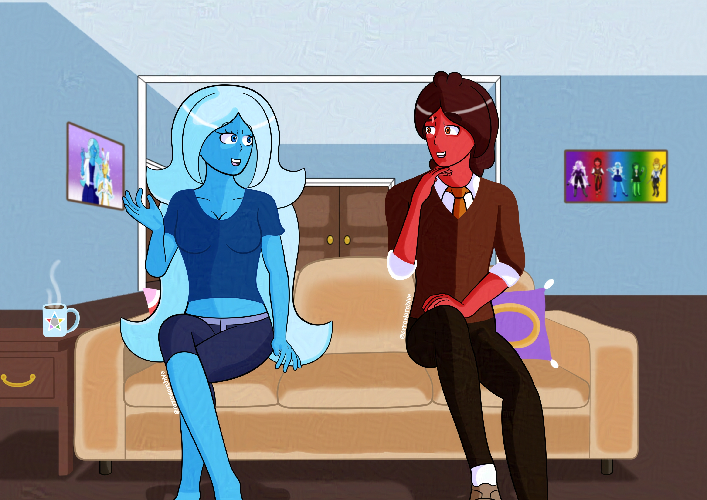

Casual Discussion
What started as a drawing between studies became an experiment with perspective, shading, and clothing design. Do I regret it? Not at all! I've had trouble designing the living spaces for my characters, so I decided to start small. I used assets provided by Clip Studio to stage the scene, adjusted the poses, and experimented with the perspective to provide the look I wanted. It took a while to get it right, but I'm happy with the result.
This drawing is the beginning of my experiments with room design, perspective, and putting my characters in more varied environments rather than gradient backgrounds with a lot of effects. Those drawings are fun, but I want to expand my horizons.
The room is plain for what it is and the characters are wearing casual clothes, but that is what the piece is supposed to be: casual. I didn't want to fret over the folds on Aqua's dress or how the emblem on Pyro's shirt would look post-shading. I feel like this may be redrawn once I have more experience, but I like how it looks.
Side note: I haven't drawn Pyro since August, and his design barely changed. I guess I'm satisfied with his design right now. No, the compilation picture in December doesn't count.
(If anyone finds the Dream Team easter eggs in this picture, you have my respect)